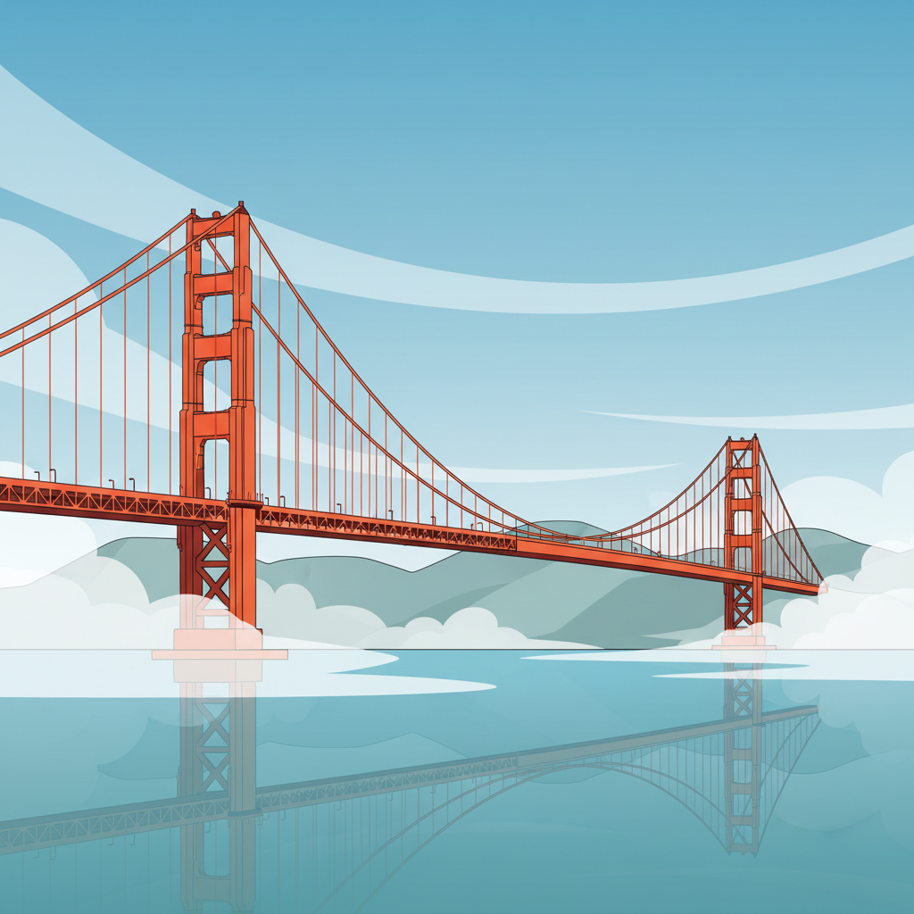

Simplifying the complicated
I specialize in B2B SaaS and mobile design, with a focus on solving complex problems in complex industries. I take dense, technical experiences and turn them into something intuitive — for anyone, not just experts.

View My Work
What was broken, what the research changed about the brief, and what happened after launch — including the parts that didn’t work.
Media Processing & Workflow Automation
Legacy flagship application redesigned using user centric approach. 72% more task completions.
Read the case studyReal-Time Insights for Media
Eleven percent of appointments went unfilled. The fix was not a bigger notification. 91 average SUS Score.
Read the case studyEnsuring compliance on fresh produce
Redesigned the label creation workflow. 92% task success, up from 78%.
Read the case study7 years, multiple industries.
Senior product designer with 7 years across multiple industries. Building design teams and processes from the ground up.
View full resumeSenior Product Designer
Oct 2023 — PresentTelestream · Remote
- Joined as one of the first designers at a company with no design function; built the design practice from the ground up and helped grow the team to 7 designers.
- Created Telestream's first design system, driving the redesign of 9 applications across the product suite.
- Led design for 4 products from concept to market launch across broadcast monitoring and media workflow tooling.
- Established the company's first research and feedback loop — usability testing, a direct customer channel, and SUS/task-success metrics that quantified design impact.
UX/UI Designer
Jan 2020 — Sept 2023iTradeNetwork · Dublin, CA
- Lead UX/UI designer on multiple high-impact projects to help innovate new solutions and enhance current applications.
- Contributed to the development of an enterprise-grade design system, ensuring consistent user experiences across diverse product offerings.
- Redesigned multiple legacy applications and achieved notable increases in system usability scores.
- Collaborated with cross-functional teams to translate market and user insights into problem discovery, solution ideation, and actionable design recommendations.
Enterprise Customer Success Manager
Jul 2016 — Jan 2019Everfi · Walnut Creek, CA
- Managed portfolio of 80–100 accounts of enterprise & strategic customers; total ACV of $1.4 million.
- Worked with cross-functional teams to develop opportunities and solutions to meet the needs of partners.
- Renewed customer contracts to protect existing revenue streams and qualified opportunities for revenue growth.
- Identified potential issues and risks early in the implementation cycle and developed backup strategies and contingency plans for resolution.
User Experience Design Program
Jan 2019 — Aug 2019UX Berkeley Extension · San Francisco, CA
BS, Business Marketing
2010 — 2012San Francisco State University · San Francisco, CA
Let’s Chat!
Open to staff-level product design roles — Bay Area or remote. The fastest way to reach me is email — I answer within a day.
rpartovi123@gmail.comBased in Bay Area, CA